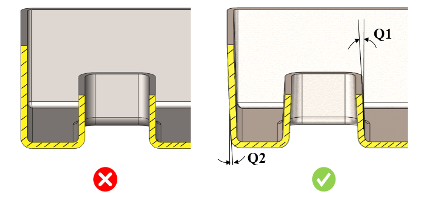

コアおよびキャビティから部品を容易に離型できるように、抜き方向に沿ってコンポーネントの壁面に最小抜き勾配を付与する必要があります。
抜き勾配とは、鋳造部品の側壁に設けられる傾斜またはテーパーのことです。抜き勾配を設けることで、鋳物またはパターンを金型から容易に取り外すことができます。鋳造部品に適切な抜き勾配を追加することで、サイクルタイムと表面品質が向上します。
一般的に、コアには 0.5 度、キャビティには 3 度の抜き勾配を推奨します。
ルール UI では、Map Material から材料の一覧が読み込まれ、ユーザーは材料およびその値を構成できます。
材料とその値を構成した後、ユーザーは Ctrl+M コマンドを使用して、ルール UI 上でマテリアルグループおよびグレードとともに構成済み材料の一覧をフィルタ表示できます。同じキー（Ctrl+M）を使用してフィルタをリセットできます。

Q1 = コアの抜き勾配
Q2 = キャビティの抜き勾配